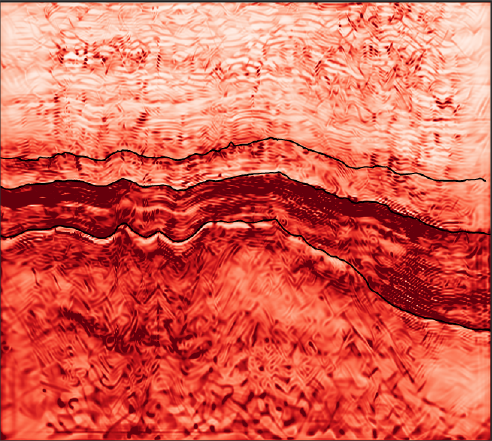

Waves: forward and inverse
We develop fundamentally new approaches to process and image geophysical data, such as:
- Robust and flexible redatuming schemes for modern acquisition systems;
- Highly modular inversion algorithms to include both model-based or data-driven priors;
- An algorithm for petrophysical inversion that uses linear, learned transformations to invert non-linear rock physics models.
Geophysical methods such as reflection seismology have played a key role in the discovery of hydrocarbons and other underground natural resources over the last few decades. As the world moves away from fossil fuels and progresses into new energy solutions, geophysics is likely to remain a key factor in the success of such an endeavour. However, as these new low-carbon projects generate limited revenues compared to their fossil fuel counterparts, financial constraints will be put on the choice of geophysical methods available for characterisation and monitoring of the subsurface. To tackle such a challenge, we must be creative and develop new acquisition, processing, imaging, and inversion technologies that can provide more with less.
My group's research agenda has given significant importance to these needs. We believe that conducting fundamental research on wave propagation phenomena and inverse problem theory is crucial for generating innovative solutions to longstanding challenges and developing novel tools that meet the current societal demands and requirements.
Multi-dimensional, full-wavefield seismic processing
Most algorithms for processing and imaging of seismic data, originally developed in the 80’s and 90’s, operate on individual gathers (e.g., common-shot, common-receiver, common-midpoint, etc.). A paradigm shift has however emerged in the early 2000s, with a large portion of modern algorithms relying on wave-equation, inversion-based formulations: such algorithms require repeated access to the entire seismic data in order to evaluate the so-called Multi-Dimensional Convolution (MDC) operator and its adjoint and solve an underlying inverse problem. Examples of such a kind are closed-loop SRME, estimation of primaries by sparse inversion, Multi-Dimensional Deconvolution (MDD), and Marchenko-based processing and imaging. Whilst we believe in the importance of tackling some of the computational aspects associated with these kind of problems (as detailed in the HPC section below), our research is also strongly focused on improving the mathematical formulation of some of these problems to make them more suited to current and future acquisition systems and easier to apply to available data.
MDD is undoubtedly one of those geophysical processing algorithms that has recently gained traction in industry due to its versatility in addressing multiple challenges in a variety of seismic applications ranging from ocean-bottom data processing to target-oriented imaging and monitoring. However, the extremely ill-posed nature of this inverse problem calls for the development of efficient strategies to mitigate such a limitation. In Vargas et al. [2021], we have been amongst the first to advocate for the importance of solving this problem in its original time-space domain. Whilst, in fact, MDD is commonly solved in the frequency-space (or frequency-wavenumber) domain for computational reasons, our results show that the time-domain solution is usually more stable and naturally lends to the inclusion of some prior knowledge of the physics of the solution in the inverse problem by means of physics-based preconditioners. Along similar lines, in Ravasi et al. [2022] we exploited a property of this problem, namely the fact that the underlying objective function can be written as a finite-sum functional, to solve MDD by means of stochastic gradient-based optimizers. Whilst we initially explored this avenue to reduce the computational cost of solving MDD by leveraging the possible redundancy present it its gradients, our results show that using partial gradients can also act as a natural and cheap regularizer to the problem that is on-par with some of the physics-based regularizers proposed in our previous work. Finally, our recent endeavours have focused on parametrizing the solution of MDD as a rank-deficient matrix in the frequency-domain. Whilst using low-rank regularization techniques is a well-established practice in geophysics, in Chen et al. [2023] we have presented a novel low-rank parametrization that leverages the fact that the sought after wavefield in the MDD problem must be symmetric. This novel parametrization not only showed to be very beneficial to regularize the underlying inverse problem, but also allows storing the solution into a very compact form (a single tall matrix instead of two, as required by standard factorization-based low-rank parameterizations).
Whilst MDD is slowly becoming mainstream in the seismic industry, Marchenko-based processing and imaging algorithms are still mostly in the realm of academia. Alongside sharing similar computational challenges with MDD and other multi-dimensional seismic processing algorithms, one of the key challenges of currently available Marchenko methods lies in their strict data requirements; in other words, either specialized acquisition systems or ad-hoc pre-processing sequences are required for such methods to work. In Wang and Ravasi [2024] we have developed the very first Marchenko method for seabed seismic systems that requires basic data pre-processing and can handle sparse geometry acquisitions as commonly adopted in industry to reduce the cost of acquiring seismic data in complex marine environments.
High-resolution reservoir characterization
Reservoir characterization is the process of generating an understanding of the spatial variations in a reservoir’s physical properties by mapping seismic data into elastic or rock properties; this has applications ranging in hydrocarbon exploration and production, geothermal, CCUS, and assessment of construction sites for wind farms, just to name a few. No matter the purpose of a reservoir characterization exercise, the quality of the estimated parameters heavily depends on the quality of the input data. However, since we may not always be able to directly influence the quality of our observations, providing prior information to the inverse problem that we are required to solve becomes the only viable way to ensure successful inversion results.
In recent years, my research group have introduced a number of regularization strategies to enforce prior knowledge about the structure of the subsurface (so-called external priors), leverage self-similarity in the sought-after models (so-called internal priors), and incorporate our knowledge about different geological units and their elastic properties in the inverse problem (so-called geological priors). In Ravasi and Birnie [2022], we have shown the importance of choosing the right solver and how that can enable us to include both isotropic Total Variation and segmentation regularization terms in the process of inverting post-stack seismic data for their acoustic impedance model. The latter is particularly beneficial to drive the inversion towards a set of pre-defined geological units and counteract the limitations of band-limited and noisy seismic data. To the best of our knowledge, we have also been the first group to show that the Chambolle-Pock Primal-Dual solver provides results of superior quality and faster convergence compared to other, more widely used solvers in our community (e.g., ADMM). With this publication, we have also started our journey in the fascinating world of proximal operators (and solvers), which has led us to a number of interesting discoveries as detailed throughout this page. In Romero et al. [2023], we have further adapted the concept of segmentation priors to time-lapse seismic inversion, producing astonishing results on the open Sleipner dataset where the CO2 plume is defined a resolution higher than any previous state-of-the-art method could achieve, and its extracted volume quantitatively agrees with the reported amount of injected CO2.
In Romero et al. [2022], we have instead explored the captivating concept of Plug-and-Play (PnP) priors, initially introduced to the wider imaging community by researchers at Purdue University in 2013. The idea is rather simple but very powerful: what if denoisers could be used as regularizers? The answer is yes, and the reason lies in the realization that a proximal operator does effectively represent a maximum-a-posterior denoising problem. Whilst the idea showed to be rather powerful already in 2013, it was only recently with the explosion of deep learning based denoisers (we will talk more about this in the ML in geoscience section) that PnP priors have led to impressive results in a variety of imaging problems. In our specific case, we have shown that coupling the Chambolle-Pock Primal-Dual solver with a pre-trained DRUNet network represents the magic sauce for achieving state-of-the-art inversion results on both synthetic and field data. Finally, whilst extending PnP to 3D comes with challenges, in Luiken et al. [2024] we have shown how the related concept of Multi Agent Consensus Equilibrium (MACE) can be used in combination with multiple denoisers (applied over different directions) to retain the impressive capabilities of the PnP method when inverting 3D datasets. Whilst most of our examples have considered the problem of post-stack seismic inversion, any of the above developments can be easily applied to other seismic inversion scenarios. For example, in Ravasi et al. [2023] we have also considered the problem of pre-stack inversion.
Seismic inversion is a powerful tool for geophysicists as it allows them to turn seismic data into quantitative models of various kinds of elastic properties. Nevertheless, geophysicists are nowadays asked to work more closely to and in synergy with experts from other disciplines such as geology or reservoir engineering: as such, producing models of rock properties that geologist and reservoir engineers can more easily relate to and use in their workflows has become very important. In practical terms, this requires combining empirical or theoretical rock physics models with seismic modelling equations and finding ways to invert seismic data directly for static or dynamic reservoir properties, examples of which are porosity or shale content for the former family or changes in saturation or pressure for the latter one. In Corrales et al. [2023] we propose a fundamentally new approach to petrophysical inversion that contains a data-driven component (learning the mapping between pre-stack data and band-limited petrophysical models via Singular Value Decomposition - SVD) alongside a model-driven component (undoing the effect of the seismic wavelet). A very appealing feature of this method is that the latter part can be shown to be equivalent to post-stack inversion with the same modelling operator and a slightly different kind of input data: as such, all of the developments that we have proposed for post-stack inversion can be seamlessly leveraged also in the context of petrophysical inversion.
HPC for Geoscience
We combine our expertise in geoscience with our passion for HPC to process seismic data more efficiently, using:
- Tile low-rank compression techniques;
- Mixed precision algebraic computations.
High-Performance Computing (HPC) is in most cases the answer to bridge the gap from theory to practical applications. Geophysics is no exception to this rule, and HPC has in fact been vital in the last decade to enable a number of technologies that existed on paper since the 80s. As developing novel methodologies that can scale all the way to real-life, full-scale problems is a key element of my scientific mission, HPC represents an important part of my daily life.
Our research in HPC for geoscientific applications has recently focused on enabling the application of some of the very powerful inversion-based seismic processing algorithms that we have developed over the years, such as MDD and Marchenko-based redatuming, to large-scale 3D datasets. In fact, although numerous academic institutions have shown that these methods can clearly outperform industry standard algorithms, their application to 3D field datasets is still in its infancy, mostly due to the extreme computing requirements of these methods. As shown in Hong et al. [2021] and Ravasi et al. [2021], a key enabler for our technology is represented by the ability to greatly compress seismic data in the frequency domain, especially if sources and receivers are smartly re-arranged using the so-called Hilbert space-filling curve. We refer to such a compression algorithm as Tile Low-Rank (TLR) compression, since each frequency matrix is first tiled into blocks of constant size, and each block is later compressed by means a low-rank revealing algorithm, such as SVD or any of its randomized variants. By leveraging this compressed representation of the seismic data, we can develop extremely efficient matrix-vector multiplication kernels that allow solving the associated inverse problem in a fraction of the original time and with a much smaller memory footprint. Finally, we have taken an exciting direction in Ltaief et al. [2022] and Hong et al. [2023], where we experimented with storing our compressed vectors in lower precision (float16 or even int8) and performing low-precision arithmetics in our matrix-vector multiplication kernels; our initial results seem to suggest that geophysicists have over-computed for many years and processing seismic data using low-precision formats may become mainstream in the near future (as it is already, for example, in AI applications).
Finally, whilst our initial work targeted the Marchenko redatuming method, out latest research in Ravasi et al. [2022] and Hong et al. [2023] has focused on showing that MDD can also benefit from the use of TLR compression and TLR-enabled matrix-vector multiplications. We have also showed that our implementation of TLR matrix-vector multiplication can be easily adapted to "standard" accellerators (e.g., GPUs), as well as more exotic ones, such as Graphcore IPUs (Ltaief et al. [2023a]) or Cerebras CS-2 systems (Ltaief et al. [2023b] - this is our finalist submission to the prestigious 2023 Gordon Bell Prize!).
Deep Learning in Geoscience
We experiment with the latest developments in AI to transform the way we analyse geophysical data, for example:
- Use self-supervised learning in seismic processing to leverage NNs in the absence of labelled data;
- Aid the solution of ill-posed inverse problems with NN-parametrized solutions.
- Perform efficient UQ with the aid of the Neural networks.
Deep Learning (DL) is without any doubt the fastest growing branch of artificial intelligence, whose far-reaching impact can be now found in any aspect of our daily lifes. If we look back at most of the main breakthroughs in DL in the last decade, a clear trend can be identified: all of the prime applications of deep learning concern with human behaviours that we struggle to explain and encode in simple mathematical models. Two examples of such a kind are our ability to recognize objects and to communicate. Deep Neural networks have shown to be the perfect solution to learn these behaviours directly from data, with machines that are now able to categorize objects in images faster and more reliably that any human can do (and without getting bored or tired!) and to write essays or even computer codes better and faster than many of us can do on their own.
There is, however, a large variety of problems in scientific disciplines ranging from geoscience to medicine to astrophysics where decades of research of relentless and smart scientists has led to the development of accurate physics-based models that are able to explain what we observe in nature with rather simple mathematical equations. A question that we, as well as many others in the scientific community, have asked ourselves when we started to deep our toes into DL is whether purely data-driven models could outpace our standard model-driven methods or not. Whilst I believe that no consensus has been reached to date (this is one of the good things of science, there is always room for discording opinions and new ideas!), we have mostly focused on investigating new ideas and developing new methods to combine well-known physics with the power of neural networks.
Self-supervised denoising
 One of our very first endavours has been devoted to a new family of self-supervised neural networks, called blind-spot networks. What makes these networks cool (and useful) is the fact
that they can perform denoising tasks with performance that is almost on-par with classical supervised learning approaches whilst not requiring clean-noisy pairs of data. Instead, when only
one or more instances of noisy data are available (a common scenario in seismic applications), these networks leverage the inner structure of the signal by predicting it using a non-linear, learned combination of
the very same signal at neighbouring locations. In Birnie et al. [2021] we have been the first in the geophysical
community to succesfully utilize a blind-spot neural network to remove different types of noise from seismic data. Whilst this represented an important milestone for us (and for many others in the field,
given that our work has already been cited more than 50 times!), the proposed approach required careful design of the blind-spot mask based on the structure of the signal and the noise in the data.
In Birnie and Ravasi [2023] we have recently found a way to make this
approach even more flexible and perhaps appealing for real-time denoising of streaming data as the optimal mask can be automatically identified by probing the Jacobian of the blind-spot network.
One of our very first endavours has been devoted to a new family of self-supervised neural networks, called blind-spot networks. What makes these networks cool (and useful) is the fact
that they can perform denoising tasks with performance that is almost on-par with classical supervised learning approaches whilst not requiring clean-noisy pairs of data. Instead, when only
one or more instances of noisy data are available (a common scenario in seismic applications), these networks leverage the inner structure of the signal by predicting it using a non-linear, learned combination of
the very same signal at neighbouring locations. In Birnie et al. [2021] we have been the first in the geophysical
community to succesfully utilize a blind-spot neural network to remove different types of noise from seismic data. Whilst this represented an important milestone for us (and for many others in the field,
given that our work has already been cited more than 50 times!), the proposed approach required careful design of the blind-spot mask based on the structure of the signal and the noise in the data.
In Birnie and Ravasi [2023] we have recently found a way to make this
approach even more flexible and perhaps appealing for real-time denoising of streaming data as the optimal mask can be automatically identified by probing the Jacobian of the blind-spot network.
Whilst denoising alone is a very important task in geophysics, as seismic data are denoised at different stages of the processing value chain, another crucial processing step benefits from the availability of powerful denoisers is deblending. More specifically, when seismic data are acquired using simultaneous shooting technologies, the recorded data contains so-called blending noise. This must be removed at the very beginning of the processing sequence and the quality of the deblending process can affect to success of a seismic processing and imaging sequence. In Luiken et al. [2023] we have shown that embedding a blind-trace, self-supervised denoiser into the PnP method allows us to deblend seismic data by means of an inversion algorithm that combines the physics of the blending process with the power of neural networks. Our algorithm is very flexible and has been also extended in Luiken and Ravasi [2023] to another acquisition setting, namely to ultrasonic data acquired for non-destructive testing purposes.
Parametrizing Inverse problem solutions with (all sort of) NNs
Another exciting area of research where deep learning can be used alongside physics-based modelling entails parametrizing the solution of an inverse problem with a neural network. In Ravasi [2022] we propose to learn compact representations for seismic wavefields by means of an AutoEncoder (AE) network and later solve the associated inverse problem in the latent space of such a network. By constraining the solution to the manifold of expected solutions as captured by a properly crafted training data, we show that this approach is superior to various state-of-the-art sparsity based inversion algorithms routinely used for a variety of processing tasks in geophysics. Whilst using a nonlinear dimensionality reduction technique such as an AE network, or more recently developed generative networks (see below in the UQ section for more details), is appealing to regularize the solution of ill-posed inverse problems, it does however still require availability of some sort of training data. On the other hand, the recently established coordinate-based learning paradigm (also called Implicit Neural Representation - INR) puts forward the idea that simple MLP networks could be used to robustly represent any continuous function by taking its spatial coordinates as input. In the original formulation, the network's parameters are directly learned from a set of discrete training points of the object that we want the network to store; more recently, some of our KAUST colleagues have shown that one can uplift this paradigm to the solution of inverse problems and learn the parameters in a fully unsupervised manner by simply using a data misfit loss plus any regularizer of choice, as commonly done when solving an inverse problem. In Romero et al. [2023] we had a great deal of success in adopting this concept to seismic inverse problems, obtaining results that are on-par (or sometimes even better) with those of some of our state-of-the-art algorithms discussed in the High-resolution reservoir characterization section.
Physics Informed Neural Networks (PINNs) can be seen as a specialized version of INRs. They are specifically used to solve direct or inverse ODE- or PDE-based problems. Key to PINNs is the loss function, which encapsulates our knowledge of the physical system that we want to model (i.e., an ODE or PDE), and the mechanism used to obtain derivatives of the state variable with respect to the independent variables of the differential equation (i.e., Automatic Differentiation). In Brandolin et al. [2023] we have recently re-purposed Fomel's idea of processing seismic data with slopes by recasting the slope estimation and seismic interpolation problems within the PINN framework. Going forward we aim to further exploit the intrinsic benefits of neural networks and more in general of nonlinear, differentiable optimization to separate seismic data in multiple components based on their slope, a process that could facilitate the solution of many longstanding seismic processing tasks.
Deep Learning assisted Uncertainty Quantification
 As inherent in human nature, we tend to instinctively pursue the optimal solution to a problem and prioritize it above all else. However, as we live in an uncertain world, we must learn how to cope with uncertainties. This simple life principle applies also to any scientific decision that we make, and motivates the quest for methods that can quantify and propagate uncertainties in any decision making process. For many years, geophysicists have strived to develop efficient algorithms to solve inverse problems with a probabilistic mindset (i.e., providing not only the best solution but also the associated uncertainties); however, in my personal opinion, most of the solutions available out there cannot properly capture the complexity of our prior and noise models due to algorithmic limitations, which leads to solutions that are at best unrealistic (despite perhaps being statistically valid). The tremendous growth of generative modelling in the DL community has however recently opened some very promising avenues, which we have started to explore with great success. In Izzatullat et al. [2023] we have applied the Stein Variational Gradient Descent (SVGD) algorithm to the post-stack seismic inverse problem. SVGD, a method that belongs to the family of Variational Inference (VI) methods, allows one to sample a number of initial particles and solve a Bayesian inference problem using classical gradient-based optimization algorithms over those particles in a coupled manner; as most Bayesian approaches, SVGD does not naturally lend to the inclusion of prior knowledge that cannot be easily embedded into a probability density function: to circumvent this, we propose PnP-SVGD, a regularized variation of the SVGD algorithm that introduces the PnP concept to probabilistic inversion with the aim of producing more realistic and reliable samples of the posterior distribution of interest. Once again, denoising neural networks are shown to outreach their original goal of removing noise from a given observed natural signal.
Whilst SVGD is an non-parametric VI methods, VI can also be casted in a parametric form where the parameters of a so-called proposal distribution are iteratively updated to match the posterior distribution of interest. The choice of such a parametrization is fundamental to the success of VI, and must strike a balance between expressivity (i.e., the chosen probabilistic model can be used to represent the underlying distribution) and tractability (i.e., the chosen probabilistic model must be easily to evaluate and sample for). In Ravasi [2023a] we extend the idea of using the latent space of a AE network to ease the solution of a deterministic inverse problem into the realm of probabilistic inversion; more precisely, by replacing the AE network with a Variational AutoEncoder (VAE) network, we define a latent, separable normal distribution and learn its mean and variance parameters by means of parametric VI. In this method, the prior is directly learned from training data: provided that the parametrization of the latent space is capable of capturing its complexity, the posterior samples are therefore also likely to be realistic looking and of high quality. Finally, diffusion models are another family of generative models that have shown great promise over the last couple of years in computer vision. Their adoption in geophysics is likely to be disruptive as it may provide us with novel sampling algorithms that can produce multiple instances of an inverse problem that are all realistic and of high quality. In Ravasi [2023b] we have shown a very first example where denoising neural networks can be used as proxy for score functions (i.e., the gradient of the logarithm of a probability distribution) and embedded into Langevin dynamics type of samplers to draw multiple samples from a posterior distribution of choice. In our case, we considered the problem of seismic interpolation and were able to produce 50+ realizations that, whilst matching the available data, realistically interpolated the missing traces with a variety of seismic-like features that are indistinguishable from the actual observed data. In our experience, no other method has ever been able to achieve this.
From theory to field
We strive to bring to the field some of the techniques that we develop, such as:
- Slope-assisted, multi-channel interpolation of seismic data;
- MDD redatuming for Seismic-While-Drilling.
Those who are familiar with my research know that I have always been passionate about developing new theoretical concepts and translating them into efficient algorithms. With time, I have however realized that there is one thing about being able to acquire data in the field: apart from making someone a more rounded geophysicist, it allows developing new ideas from the ground up combining ideal acquisition setups with ad-hoc processing techniques. Whilst in the past the entry level for purchasing sophisticated acquisition systems was very high and not really affordable for academia, things have changed a lot in the last decade: nowadays, everyone can buy a land acquisition system with portable nodes or rent an interrogator to acquire Distributed Acoustic Sensing (DAS) data, just to make two examples.
In Ravasi et al. [2023] we developed a novel algorithm to interpolate seismic data leveraging the information contained in so-called gradient data (i.e., measurements of a wavefield and its first-order spatial derivatives). Whilst many researchers have found different ways to leverage gradient data, our approach is unique in that it allows estimating an accurate slope field also in the presence of severely aliased data and using it to drive the interpolation process. The method is also agnostic to the process used to acquire such gradient data. We are currently working on a proof-of-concept land survey whereby pairs of closely spaced sensors will be deployed to record the elastic wavefield and allow the computation of an accurate approximation of its first-order spatial gradient; we believe that our concept could enable novel acquisition geometries with extremely coarse spatial sampling (both regular and irregular). Whilst to the best of our knowledge no one has ever recorded such a dataset, having access to a 90 nodes Stryde system will allow us to design and acquire this data in our backyard and repeat the acquisition multiple times as we learn from experience.
 Another cool project that I have just started and will keep our group busy for the years to come is a DAS acquisition campaign at the KAUST pilot geothermal site. We have currently acquired a baseline dataset with our Stryde system to
obtain a first, preliminary understanding of the subsurface. This will be soon followed by a first-of-a-kind acquisition of a Seismic-While-Drilling (SWD) data using a joint DAS and node system. The same system will also acquire seismic passive data for a
number of days after the drilling is completed. We are excited to take on the challenge to provide new insights into the subsurface structures that lie just beneath our feet in the KAUST campus as well as to use these unique datasets to stress test some of
cutting-edge processing and imaging technologies, and example of which being our novel time-domain MDD algorithms.
Another cool project that I have just started and will keep our group busy for the years to come is a DAS acquisition campaign at the KAUST pilot geothermal site. We have currently acquired a baseline dataset with our Stryde system to
obtain a first, preliminary understanding of the subsurface. This will be soon followed by a first-of-a-kind acquisition of a Seismic-While-Drilling (SWD) data using a joint DAS and node system. The same system will also acquire seismic passive data for a
number of days after the drilling is completed. We are excited to take on the challenge to provide new insights into the subsurface structures that lie just beneath our feet in the KAUST campus as well as to use these unique datasets to stress test some of
cutting-edge processing and imaging technologies, and example of which being our novel time-domain MDD algorithms.